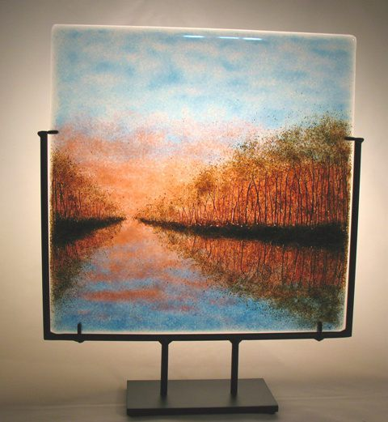
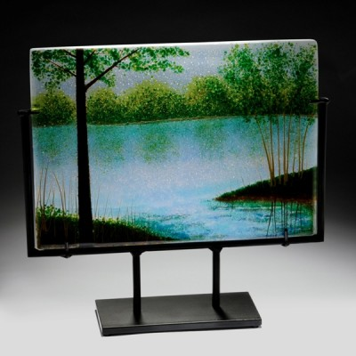

Frittimaalaus
Tasolasin pintaan voidaan rakentaa värillisiä kuvia fritillä. Olen nähnyt näin tehtyjä upeita
maisemia, ja lasijauheella toteutettuja luonnosmaisia piirustuksia.
Catherine Newell (kannattaa katsoa)
tekee maalauksia kuivalla lasijauheella.
Hän sirottelee jauhetta lasille,
ja siirtelee sitä siveltimillä ja palettiveitsellä kunnes saa haluamansa kuvan.
Se kannattaa kiinnittää fiksatiivilla ennekuin työ siirretään uuniin.
J David Norton tekee herkkiä. maisemia.
 .
 .
Foto Andrew McAllister. Julkaistu tekijän ja kuvaajan luvalla